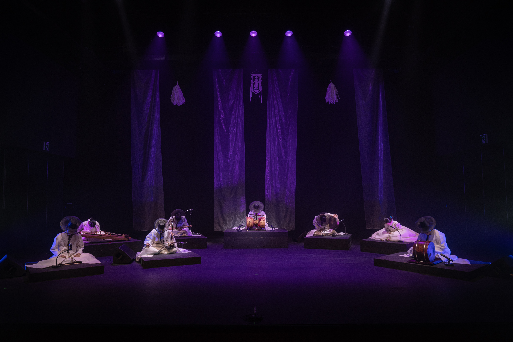
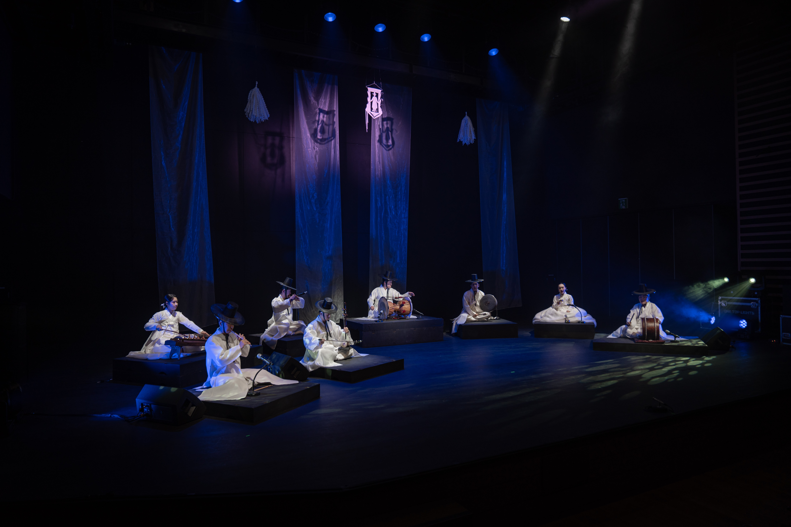

국악LAB 한양팔도
GUGAKLAB HANYANGPALDO
소 개
프로그램
연주자
갤러리
영 상
공지사항
CONTACT
연주자 소개

타악 · 김광윤
화려하면서도 절제된 장단으로 무대를 이끄는 연주자입니다.
판소리 · 한윤경
섬세한 발성과 깊은 감정선으로 이야기와 소리를 잇는 소리꾼입니다.

피리 · 문상준
정중동의 미학을 현대적으로 펼쳐내는 피리 연주자입니다.